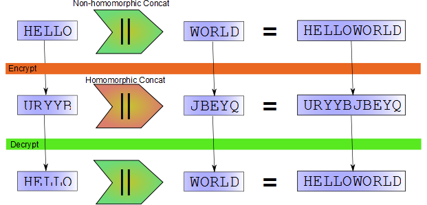

2010-03-18-what-is-homomorphic-encryption
What Is Homomorphic Encryption, and Why Should I Care?
The March 2010 issue of the Communications of the ACM includes a technical paper with an introduction entitled “A First Glance of Cryptography’s Holy Grail” (ACM subscription required). That’s enough to catch my attention. The paper itself, Computing Arbitrary Functions of Encrypted Data, describes a relatively new algorithm for homomorphic encryption.
Although these words may be unfamiliar to many, the subject matter is terribly important, because, like public-key encryption, which paved the way for secure transactions over the web, an efficient and fully homomorphic encryption scheme would enable new kinds of distributed computing. I’ll explain more about this in a little bit.
If you have an ACM membership, or can find the magazine in a library, I recommend the article. It is far and away more readable than the technical papers on the same subject which are available on the web. The article uses a running analogy of a jeweler who doesn’t quite trust her employees in order to help the reader understand the design of the system.
What Is Homomorphic Encryption?
“Homomorphic” is an adjective which describes a property of an encryption scheme. That property, in simple terms, is the ability to perform computations on the ciphertext without decrypting it first. Because this tends to sound either baffling or miraculous the first time you hear it, let’s begin with a very simple example.
The popular but wildly insecure cipher scheme rot-13 (a.k.a. “Caesar cipher is partially homomorphic, specifically with respect to the concatenation operation. Imagine we write an Encrypt and Decrypt function using the rot-13 algorithm. The”secret key" will be 13, the number of characters each letter is shifted. Let’s encrypt two words and then concatenate the ciphertext, and finally decrypt the result. In psuedocode, this is:
var c1 = Encrypt(13, "HELLO"); // c1 = URYYB
var c2 = Encrypt(13, "WORLD"); // c2 = JBEYQ
var c3 = Concat (c1, c2); // c3 = URYYBJBEYQ
var p = Decrypt(13, c3); // p = HELLOWORLDBecause it was not necessary to first decrypt the two fragments of ciphertext before performing the concatenation operation, we can say that rot-13 is homomorphic with respect to concatenation. In other words, it is possible to take two pieces of ciphertext and perform an operation on them which results in the ciphertext of the concatenation of the two respective pieces of plaintext.
Visually, it looks like this:

It just so happens that in this case the homomorphic concatenation (concatenating the two fragments of ciphertext) is the same operation as the non-homomorphic concatenation (concatenating two fragments of plaintext). This is not always the case. What is important is that we can perform some operation on the input ciphertext which will produce new ciphertext that, when decrypted, will produce output plaintext corresponding to a desired operation on the input plaintext.
Although rot-13 is not at all secure, it turns out that some cryptosystems widely believed to be secure have homomorphic properties. For example, “pure” and un-padded RSA is homomorphic with respect to multiplication.
Why Should I Care?
All of this may seem academically interesting, but one might wonder why I started this post claiming that “an efficient and fully homomorphic encryption scheme would enable new kinds of distributed computing.”
I think that the scenario which best makes the benefits of homomorphic encryption clear is cloud computing. It is often much more economical to buy computing resources from a cloud provider than to build a data center yourself. This is especially true if your need for computing horsepower fluctuates. But what if you want to do this computing on private data? Maybe you trust your cloud provider, but what if trust is not enough? Is there a way to get the compelling economic benefits of cloud computing while keeping your data secure?
Imagine that you have developed a web application for income tax preparation. Your application collects personal and financial information from the user, creates a tax strategy resulting in the lowest possible (legal!) income tax payment, and submits the prepared return to the IRS. From a business point of view, this application might be compelling, but it’s a daunting task operationally. In the United States, most people file their taxes once a year, before April 15th. This means that your servers will see a huge spike in demand in the first quarter of the year, with relatively little demand other times. Also, potential customers might be understandably wary about uploading their personal information and financial data to the website of a new business.
Cloud computing offers an excellent answer to the first problem. Because you buy computing resources on as-needed basis, it is very easy to increase the number of available servers when tax season arrives, and reduce the number at other times. Unfortunately, it doesn’t do anything for the second problem.
Hard security in the cloud is not really possible today. It’s very easy to have secure transmission from a local machine to a cloud data store, and of course the stored data can be encrypted. But actually performing computations on that data in the cloud requires decrypting it first. Anyone with physical access to the machine, therefore, has access to your data.
What if it were possible for a user of your tax preparation software to upload their financial information encrypted under the IRS’s public key? Then their data would be secure. You can do this today, of course, but your software would be unable to select a tax strategy for the user or prepare forms. If, however, the encryption method used was also fully homomorphic, then your software could do all of this work without first decrypting the user’s information. The output of your software would be a tax return encrypted under the IRS’s public key. Only the IRS could decrypt it.
Fully Homomorphic Encryption
So a fully homomorphic encryption scheme would seem to solve the security problem while still being compatible with a cloud deployment scenario. Unfortunately, preparing a tax return requires more than just a Concat operation. We can say that an encryption scheme is “fully homomorphic” if it supports enough homomorphic operations to implement any function we need. I’m being purposely imprecise here, because the details are a bit of a digression at this point.
Although there are a number of encryption schemes with one homomorphic operation, until recently no one was really sure if fully homomorphic encryption was even possible. Rivest, Adleman, and Dertouzos suggested that fully homomorphic encryption may be possible in 1978, but were unable to find a secure scheme. Another scheme, from Boneh, et. al., supports two operations, but you can only perform one of them once.
When you consider the complexity of a typical programming language, two operations doesn’t sound like very many, but since we are only looking at operations which mutate data (as opposed to keeping track of the current instruction pointer, etc.) it turns out that supporting the and and xor operations is enough to consider a scheme fully homomorphic, if you can perform those operations an unlimited number of times.
So it was big news when Craig Gentry managed to create such a scheme as part of his Stanford doctoral thesis. Gentry, along with several other researchers from IBM and MIT later created yet another scheme using a different encryption technique, but a similar general approach, with similar homomorphic properties.
Some would say “too big.” Bruce Schneier criticized the IBM press release for implying, in his reading, that Gentry’s scheme was practical for real applications, today. It isn’t; the computational and data storage overheads are far too high. However, this takes nothing away from Gentry’s achievement; he has shown that fully homomorphic encryption is actually possible. Indeed, Schneier concludes:
Visions of a fully homomorphic cryptosystem have been dancing in cryptographers’ heads for thirty years. I never expected to see one. It will be years before a sufficient number of cryptographers examine the algorithm that we can have any confidence that the scheme is secure, but – practicality be damned – this is an amazing piece of work.
Let’s Code It!
The second, fully homomorphic scheme proposed by Gentry, et al., and described in the CACM article is simple enough that I decided to implement it myself. I’ve learned quite a lot in the process of doing this. So in the near future I’ll be sharing my code and some of the insights I’ve made in this process.
Before I can do that, however, I need to describe some of the math involved. And I’d like to elaborate on why two operations is enough to consider a scheme “fully homomorphic.”